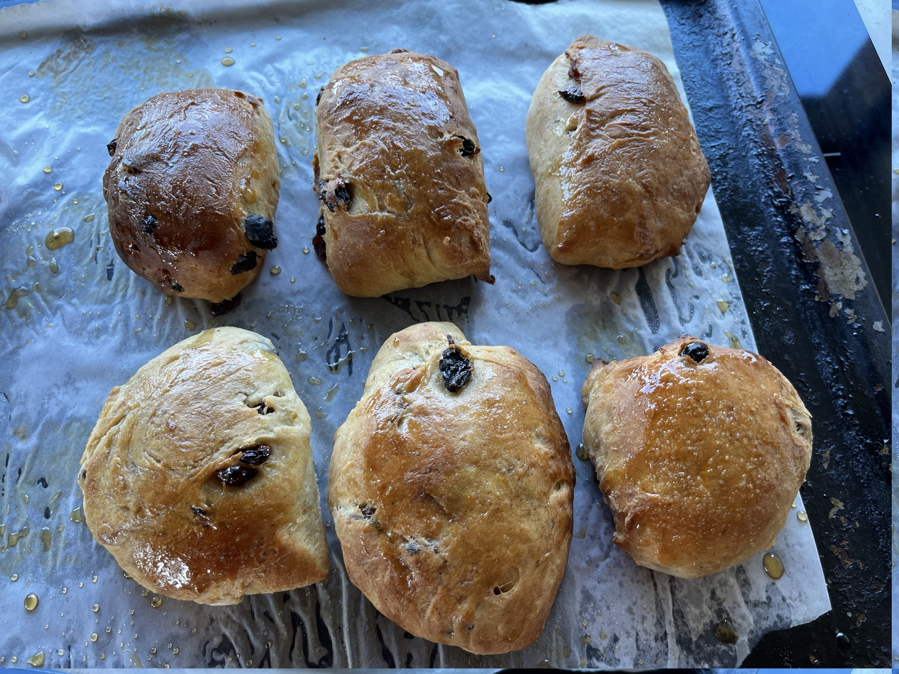

Hot Crossless Buns
 12 buns
12 buns Source
Source

Preheat oven to 90 degrees.
3 cupsplain flour1/3 cupsugar1 tspsalt1 tbspyeast
Add plain flour, sugar, salt and one packet of dry yeast to a mixing bowl.
1/4 tspall spice1/4 tspcinnamon1/4 tspnutmeg1/4 tspground cloves
Add spices - all spice, cinnamon, nutmeg, ground cloves.
somecitrus zest
Grate in citrus zest of a lemon or orange (or both).
1/2 cupsultanas
Mix in sultanas.
2 tbspbutter1/3 cupmilk1 cupwater
Warm butter, milk and water in microwave then mix in.
Knead dough.
Let rise in warm oven for about 20-30 mins.
Preheat oven to 220 degrees.
Split into 12 buns while oven is heating up and let rise a bit longer.
Bake in oven for about 10-15 minutes.
2 tbspbrown sugar2 tbspboiling water
Glaze with brown sugar and boiling water mixed together and brused on top.